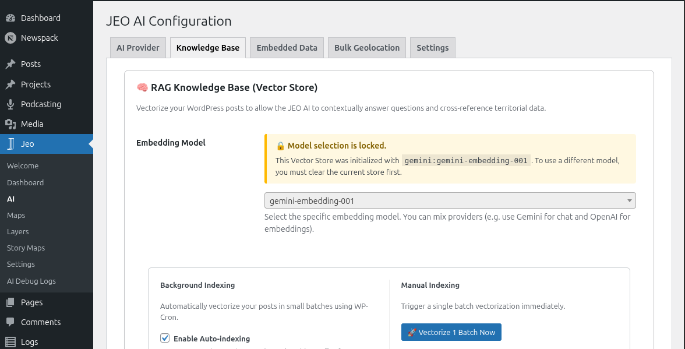

AI Settings
JEO includes built-in AI capabilities for georeferencing posts, generating maps, and creating custom map layers. Before using these features, you need to configure an AI provider.
Configuring an AI provider
Navigate to Jeo → AI in the WordPress dashboard. The settings page is organized into tabs:
Provider tab
Select one of the 10 supported AI providers and enter your API key:
| Provider | Requires API key |
|---|---|
| Google Gemini | Yes |
| OpenAI | Yes |
| DeepSeek | Yes |
| Anthropic | Yes |
| Ollama | No (local) |
| Mistral | Yes |
| ZAI | Yes |
| HuggingFace | Yes |
| Grok | Yes |
| Cohere | Yes |
After selecting a provider and entering the key, click Test Connection to verify it works.

Knowledge Base tab
The Knowledge Base (RAG) stores vectorized versions of your posts and layers, allowing the AI to search for contextually relevant content when georeferencing or generating maps.
- Embedding model: Choose an embedding model from your provider (or use Ollama locally).
- Auto-indexing: Automatically index new and updated posts/layers in the background.
- Batch size: Number of items processed per indexing cycle.
- Cron interval: How often the background indexing runs.
- Search results (topK): Maximum number of semantic matches returned per search (1–50, default 10).
- Actions: Manually trigger indexing for posts or layers, backup/restore the vector store, or clear it.

Embedded Data tab
JEO ships with built-in Brazilian geographic dictionaries (biomes, conservation units, indigenous lands, hydrographic basins, and more). These help the AI recognize geographic references in your content. This tab shows which dictionaries are loaded.
Bulk Geolocation tab
Configure batch geolocation settings for processing many posts at once. See AI Bulk Geolocation for details.
Context Assistant tab
Customize the system prompt used by the AI Context Assistant — the editorial suggestions sidebar in the Gutenberg editor.
- Use custom prompt: Check this box to override the built-in default prompt with your own.
- Custom prompt: Editable textarea for your custom system prompt. When unchecked, the tab shows the default prompt in a read-only field for reference.
Leave the custom prompt empty to use the built-in default, which is optimized for journalistic editorial assistance with RAG integration.
Structured output
When enabled (default), the AI returns results in a strict JSON format enforced by the provider. This improves accuracy for georeferencing and map generation. You can disable it in the AI settings if your provider does not support it.
Cost tracking
JEO tracks AI usage in Jeo → AI Debug Logs. Each log entry records the provider, model, input/output tokens, and the prompt and response. Use this to monitor costs and troubleshoot responses.